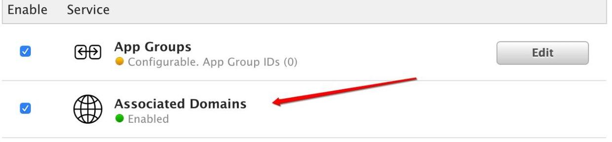
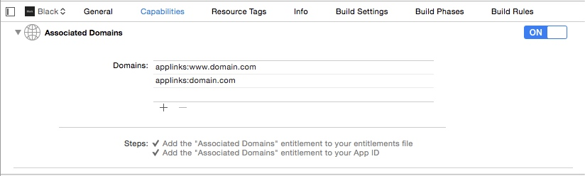
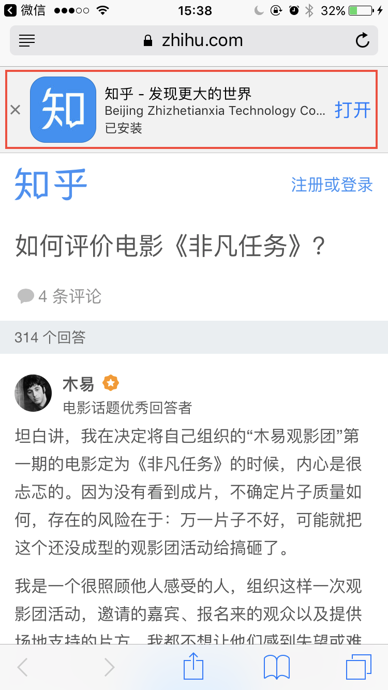
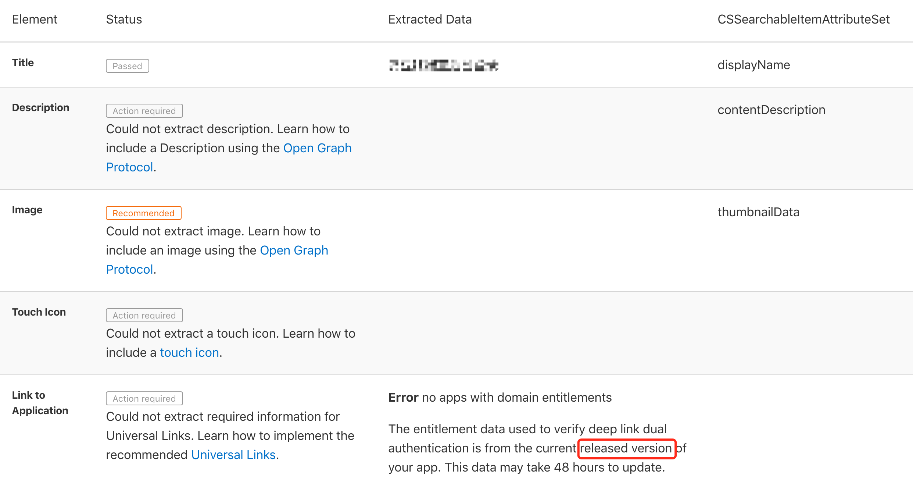
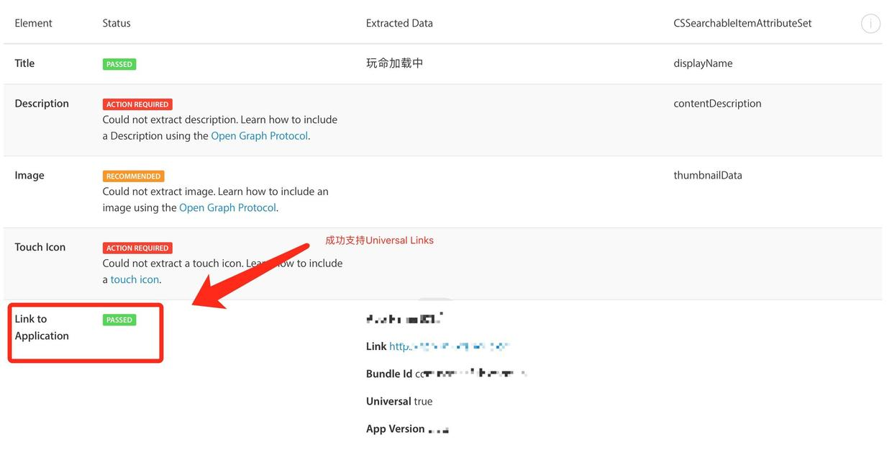
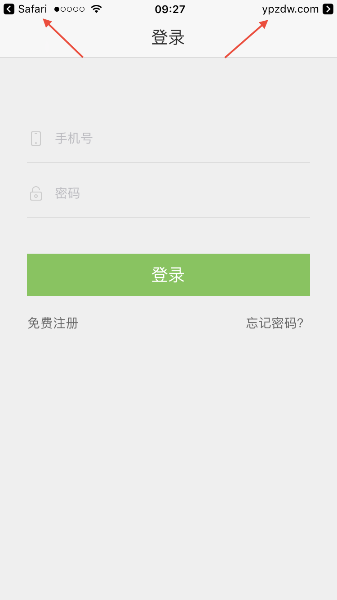
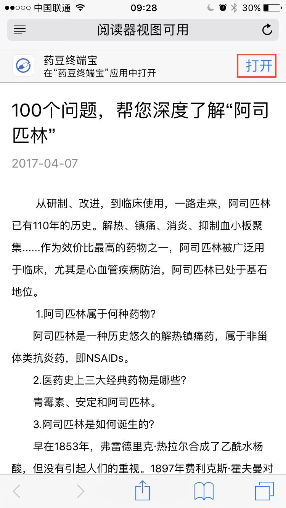

背景
iOS 9 以前，从外部启动 App 都是通过 URL Scheme 实现跳转的。这种方式虽然可自定程度很高，能够巧妙地实现很多跳转，但是也存在很多弊端。
在 2015 年苹果 WWDC 上，苹果宣布了 Universal Links 这项新技术，实现了在 iOS 9 及之后的系统上，在只做少量额外开发的条件下，不同 App 之间能够直接、顺畅、无缝衔接的跳转，让用户体验又提升了一个级别！
URL Scheme VS Universal Links
URL schemes
非常有效，能够让 app 之间彼此交流，传递数据。
缺陷
- 需要提前加入到白名单，且会询问用户“是否打开‘xxx’应用”。
- 不会总能映射到正确的 app，两个 app 可能拥有同样的 scheme，而开发者不能明确地表示他们指的是那个 app。
- app 没有安装的时候不能工作。
- 不能有效地保护用户隐私。app 需要查明是否已经被安装在设备上，这意味着它可以嗅探出用户是否安装了某些 app，而这本应属于用户的个人信息。
Universal Links
Universal Links 是苹果在 2015 年 WWDC 上推出的一项新功能，官方功能描述如下：
In iOS 9 and later, universal links let users open your app when they tap links to your website within WKWebView and UIWebView views and Safari pages, in addition to links that result in a call to openURL:, such as those that occur in Mail, Messages, and other apps.
即当用户在 WKWebView、UIWebView 或者 Safari 中点击一个链接，如果设备上安装了适配该链接的 app，就可以跳转该 app 对应的页面，否则仍然展示网页 。
由于目前微信内置浏览器不支持 openURL 的方式进行应用间的跳转，不少 app 都是通过接入 Universal Links 实现微信浏览器一键跳转到自己 app 的功能，比如网易新闻，知乎等。
优点
相比于 Custom URL Scheme，官方文档中给出了几个优点：
- Unique. Unlike custom URL schemes, universal links can’t be claimed by other apps, because they use standard HTTP or HTTPS links to your website.
- Secure. When users install your app, iOS checks a file that you’ve uploaded to your web server to make sure that your website allows your app to open URLs on its behalf. Only you can create and upload this file, so the association of your website with your app is secure.
- Flexible. Universal links work even when your app is not installed. When your app isn’t installed, tapping a link to your website opens the content in Safari, as users expect.
- Simple. One URL works for both your website and your app.
- Private. Other apps can communicate with your app without needing to know whether your app is installed.
即：
- 独特性 与自定义的URL链接相比,通用链接不能被其他的应用程序所访问，因为它们使用标准的 HTTP 或 HTTPS 链接到您的网站。
- 安全性 当用户安装您的应用程序时，iOS 会检查您已上传到 Web 服务器的文件，以确保您的网站允许您的 app 代表其打开 URL (点击一个 URL 链接时，直接打开相应 app)。 只有您可以创建和上传此文件，因此您的网站与您的应用程序的关联是安全的。
- 灵活性 即使没有安装 app，Universal links 也可以正常工作。 当没有安装 app 时，点击一个指向您网站的链接，会按照用户的期望在 Safari 中打开。
- 简单性 通用链接同时适用于你的网站和 app。
- 私有性 其他应用程序可以与您的应用程序通信，而无需知道您的应用程序是否已安装。
缺陷
- 至少 iOS 9 以上的系统才支持 UL。
UL 开发流程
准备
- 一个 HTTPS 的后台域名
- 可以上传一个 JSON 文件到服务器的权限
- iOS 9 at least
- Xcode 7 at least
iOS 端
1. 添加 Associated Domain
在开发者网站找到想要开启 UL 的 App ID（Account -> Certificates, Identifiers & Profiles -> App IDs -> YourAppId），点击 Edit 进入编辑页面，找到 Associated Domains 将对应的复选框选中，然后点击 Done 就可以了。

如果有对应的
Provision Profiles，记得点击Edit，重新Generate，并Download更新到Xcode中。
然后，在 Xcode 中，TARGETS -> YourTarget -> Capabilities -> Associated Domains，打开此功能开关。
点击 + 添加需要支持跳转的 domain，需要以 applinks: 为前缀；同时可以添加一些子域名。比如：applinks:www.example.com，applinks:news.example.com 等。

Tips:
做完上面这些步骤，你的 app 将能够从你指定的这些域名请求一个特殊的 JSON 文件：apple-app-site-association。当你 第一次安装，或者版本更新 的时候，设备将从指定的域名请求文件：https://www.example.com/.well-known/apple-app-site-association，如果不存在，则会请求：https://www.example.com/apple-app-site-association。
2. 创建 apple-app-site-association 文件
格式及内容如下：
1 | { |
注意：
appID由开发者账号的Team ID和 app 的Bundle ID构成。paths是大小写敏感的！其他 URL 组件比如query，fragment则不是。此文件名必须为
apple-app-site-association，不能有后缀。必须为每一个你的 app 支持的拥有独立内容的
domain创建单独的apple-app-site-association文件，比如apple.com和developer.apple.com，需要单独的apple-app-site-association文件，因为这些域名提供不同的服务。
3. iOS 实现代码
在 AppDelegate.m 中实现如下方法：
1 | // https://developer.apple.com/videos/play/wwdc2015/509/ |
4. 从认可的证书签发机构获取 SSL 证书
5. 签名 JSON 文件
使用上一步的 SSL 证书对 JSON 文件进行签名。需要是用 Mac 终端的 openssl smime 命令。
1 | openssl smime \ |
iOS 9 Beta 2 版本开始，👉 不再需要此签名步骤 👈，只需要上传未签名过的
apple-app-site-association文件到HTTPS服务器即可，iOS 会处理其余工作。
Server 端
Upload it to the root of your HTTPS web server. The file needs to be accessible via HTTPS—without any redirects—at https:///apple-app-site-association. Next, you need to handle universal links in your app.
将 apple-app-site-association 文件存放在服务器跟目录，或者根目录的 .well-known 目录下。比如：
1 | https://www.example.com/.well-known/apple-app-site-association |
建议存放于
.well-known目录下，以减少访问次数，因为设备会优先请求.well-known目录，如果没有，才会去根目录下请求。注意：
apple-app-site-association文件的访问必须不支持重定向。
服务器上apple-app-site-association的更新不会让 iOS 本地的apple-app-site-association同步更新，即 iOS 只会在 App 第一次启动时请求一次，以后除非 App 更新或重新安装否则不会在每次打开时请求apple-app-site-association。
前端
Smart App Banner
介绍
Smart App Banner 是在 Safari 中浮动在页面顶端的一个 Banner，它是一个对网页无侵入的 UI 元素，可以在 Safari 自动呈现。
如果用户未安装 app，点击自动跳转到 App Store 的下载页。如果已安装，则会自动启动相应的 app。

让网页支持 Smart App Banner 的显示
在网站的 head 标签中添加一个 meta 的标签。
1 | <head> |
name="apple-itunes-app" 会告诉 Safari 你想要显示 Smart App Banner。content 包含 app-id，app id 是每个 app 在 iTunesConnect 网站创建之后，获取到的一个 id。此处的功能是：Safari 会通过此 id 向 App Store 抓取 app 的信息显示在 Smart App Banner 中，包括 app 名称，厂商等。当用户没有安装相应的 app 时，点击之后会根据此 id 跳转到 App Store 进入相应的下载页。app-argument 属性应该包括当前显示页面的 URL，或者自定义的一些参数等，当用户点击 Banner 打开 app，此参数值会被传递到 iOS 的-application:continueUserActivity:restorationHandler:
方法中，通过 userActivity.webpageURL 可以获取到。
可以通过扒取别人的网页代码，看看一些其他大公司的例子。
比如：
1 | //网易新闻 |
可以关注一下，这些代码中 app-argument 的值的写法。
Smart App Banner 在模拟器中也会出现，但显示的是一个空白的 Banner，app 名称等信息不会显示。
温馨提示：
如果一个网站的域名是被 iOS 开发人员配置在了Associated Domains中的，且在该域名上传了apple-app-site-association的文件，那么当一台 iOS 设备安装了相应的 app 之后，在Safari浏览器打开该域名下的网址，则会自动显示Smart App Banner，网页不用做任何额外开发，包括添加meta标签。但是这种情况有一个 缺点，就是如果没有安装相应的 app，则Smart App Banner不会显示。如果想要 时刻显示
Smart App Banner，则前端开发人员必须手动添加meta标签。
当前端开发手动添加了 meata 标签，则在网页中显示的 banner 左边会有一个 X 按钮，允许用户关闭掉这个 banner，而一旦用户关闭了，则在这个网站上就不会再显示了，即便重新加载网页也一样。
目前唯一能够让 Smart App Banner 再次显示的方法就是 还原所有设置 （设置 -> 通用 -> 还原 -> 还原所有设置）。具体请查看 raywenderlich - Smart App Banners Tutorial 和 Apple - Promoting Apps with Smart App Banners
自定义链接支持 UL 跳转
如果想要在网页中支持自定义 UL 跳转，比如在底部浮动一个 banner ，上面显示 打开 App，在安装了相应的 app 的情况下，如果想要达到点击这个链接自动跳转到该 app 的目的，此时这个 banner 的跳转链接必须是之前 Xcode 中配置的 Associated Domains 中域名下的链接。
* 跨域条件
想要达到自定义跳转的目的，必须满足 跨域 的条件，举例假设当前 Safari 或者微信浏览器中网页链接为 www.baidu.com/XXX/YYY，底部“打开App”按钮对应的链接URL为 www.baidu.com/AAA/BBB，由于两者都在百度的域名下，因此实际不能完成跳转到 app。
参考链接
由于对前端开发不熟，所以没怎么研究，这里提供两个前端使用 UL 的参考链接。
浏览器中唤起native app || 跳转到应用商城下载（一）
浏览器中唤起native app || 跳转到应用商城下载（二） 之 universal links
注意点及总结
注意点
- iOS 9.3 之后必须跨域才能支持 UL 跳转。
- 服务端必须是 HTTPS。
apple-app-site-association文件的访问必须不支持重定向。
总结
放一张自己总结的简单的 UL 工作流程图，方便理解跟回顾：

补充
域名验证
苹果官方提供了网址验证工具：App Search API Validation Tool
用于验证 UL 的条件有没有满足：
- 服务器后台正确上传了
apple-app-site-association文件。 - iOS 端开启且正确配置了
Associated Domains。
当验证通过，但是你的 app 还没有发布到 App Store 时显示的结果是：

如果 app 已经发布，且验证通过，则显示的是 PASSED 状态：

第三方支持 UL 跳转的 APP/平台
非完整版 : )
| App Name | 是否支持 UL 跳转 |
|---|---|
| 微博 | ✔︎ |
| 微信 | ✔︎ |
| Safari | ✔︎ |
| ✔︎ | |
| 手机百度 | ✔︎ |
| UC 浏览器 | ✔︎ |
| 支付宝 | ✔︎ |
| QQ 浏览器 | ✗ |
| Chrome 浏览器 | ✗ |
| … | … |
其他
当在 Safari 或者第三方分享的平台中点击 UL 链接打开 app 后，会在 app 右上角看到类似 example.com 的箭头指示，如果点击它会跳转到 Safari 打开之前点击的链接，同时系统会认为你选择使用 Safari 打开该域名的链接，而不是 app。那么下次你再点击该链接，它只会在 Safari 里面加载该链接。那么如何再次开启 app 跳转呢？在 Safari 页面中，手指往下拉动显示出 Smart App Banner，点击右侧的 打开 按钮，就会跳转到 app，此时系统就会认为你选择使用 app 跳转，下次再次点击链接时也会直接跳转到 app 了。
 
参考链接
iOS:
https://developer.apple.com/library/content/documentation/General/Conceptual/AppSearch/UniversalLinks.html
https://developer.apple.com/videos/play/wwdc2015/509/http://www.jianshu.com/p/c2ca5b5f391f
http://www.jianshu.com/p/d1e0c1886046
http://www.jianshu.com/p/aeca84ea2624http://stackoverflow.com/questions/35609667/how-to-support-universal-links-in-ios-app-and-setup-server-for-it/35609668#35609668
http://stackoverflow.com/questions/32751225/ios9-universal-links-does-not-workAndroid:
HOKO - Android M App Links: implementation, drawbacks and solutions前端:
浏览器中唤起native app || 跳转到应用商城下载（一）
浏览器中唤起native app || 跳转到应用商城下载（二） 之 universal links